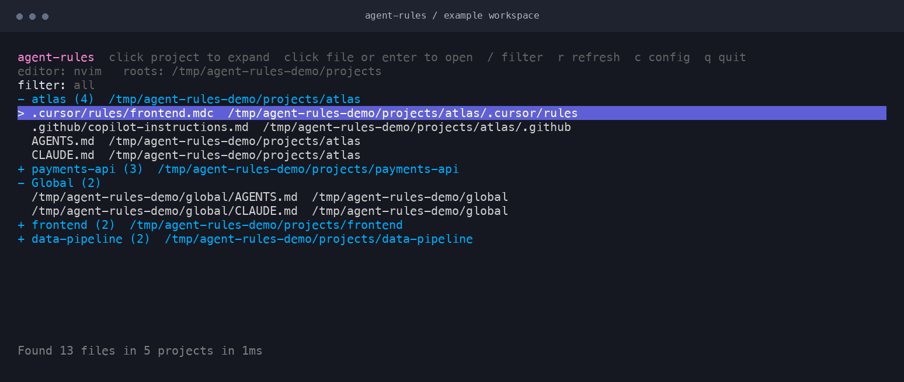

Keep your agent rules
within reach.
All those instruction files. All those projects.
One focused terminal UI to find them, browse them,
and open them in the editor you already use.


Across your workspace
Project rules and global instructions, grouped where they belong.
Ready when you are
Cached results appear first. A fresh scan follows in the background.
Stay in your flow
Open any file in Neovim, Vim, VS Code, or your own editor command.
Installation
Install with Go 1.24 or newer. Run agent-rules in a terminal on macOS or Linux.
go install github.com/natelindev/agent-rules-tui/cmd/agent-rules@latest
agent-rules --root ~/projectsThe executable goes into GOBIN, or GOPATH/bin when GOBIN is unset (usually ~/go/bin). Add that directory to your shell's PATH if the command is not found.
Build from source
git clone https://github.com/natelindev/agent-rules-tui.git
cd agent-rules-tui
go build -o agent-rules ./cmd/agent-rules
./agent-rules --root ~/projectsYou can also run go run ./cmd/agent-rules --root ~/projects from the checkout.
--root, the app scans your home directory. A narrower root makes the first scan more focused. Known global paths are checked separately.Using the TUI
Projects start collapsed and are sorted by their newest instruction file. Select a project and press Enter to expand it. Select a file and press Enter again to open your editor. Clicking does the same.
| Control | Action |
|---|---|
| ↑ / ↓ or k / j | Move the selection |
| Enter / o or click | Expand / collapse a project or open a file |
| / | Start typing a filter |
| Enter / Esc while filtering | Finish typing and keep the filter |
| Backspace outside filter mode | Clear the filter |
| PgUp / b | Move up one page |
| PgDn / f / Space | Move down one page |
| Home / g, End / G | Jump to the first or last row |
| Mouse wheel | Scroll the list |
| r | Refresh discovery |
| c | Open the config in your editor |
| q / Esc / Ctrl+C outside filter mode | Quit |
Filter to what you need
Filtering matches project names, relative paths, and full paths, ignoring case. Matching projects expand automatically. It does not search file contents. Exit filter mode before using navigation shortcuts; otherwise, those letters are added to your filter.
Choose your editor
agent-rules --editor "code -w" # This run only
agent-rules --set-editor "code -w" # Save the preferenceThe TUI resumes when your editor command exits. For GUI editors, use a wait flag such as code -w. Aliases: vscode → code -w, vscode-insiders → code-insiders -w, and neovim → nvim.
The shell PATH prompt
If a directly built executable named agent-rules is not available as that same executable in PATH, the TUI can create a symlink at ~/.local/bin/agent-rules. When needed, it also appends a PATH entry to .zshrc, .bashrc, Fish's config.fish, or .profile, based on your shell.
Press a to accept, i to skip once, or I to remember the skip. Keep the original executable in place: the symlink points to it. The app refuses to replace a regular file at the link path.
Configuration
A default JSON config is created on first run. Use agent-rules --print-config to find it, or press c to edit it. Restart the app to apply config changes.
~/.config/agent-rules-tui/config.jsonWith XDG_CONFIG_HOME set, the location is $XDG_CONFIG_HOME/agent-rules-tui/config.json. Use --config to choose a different file.
A minimal workspace config
{
"editor": "nvim",
"roots": ["~/work", "~/src"],
"ignore_path_prompt": false
}Omitted fields keep their defaults. Non-empty arrays replace their defaults, rather than extending them. Empty arrays fall back to built-in defaults.
| Field | Behavior |
|---|---|
editor | Editor command. Generated config uses nvim; omit or empty it to allow environment fallbacks. |
roots | Directories to scan; defaults to ["~"]. Repeated --root flags replace this list for one run. |
include | Case-insensitive filenames to match, in addition to built-in path patterns. |
skip_dirs | Directories to skip during root scans. Bare names match at any depth; paths with a slash match relative to the scan root. Absolute paths are also supported. |
global_paths | Files or directories to check separately and group as global instructions. Files must match a supported pattern. |
cache_path | Optional discovery cache file; defaults to the XDG cache location. |
ignore_path_prompt | Remember the choice to hide the PATH prompt; defaults to false. |
Scan roots, global paths, and directory exclusions support ~ and environment-variable expansion. A custom cache_path is used literally; prefer an absolute path.
Editor precedence
--editor- Config
editor AGENT_RULES_EDITORAGENT_MEM_EDITORVISUALEDITORnvim
"editor": "nvim", which takes precedence on subsequent runs. Remove that field to use your environment's editor.Supported files
The scanner matches filenames and known rule-directory patterns. It discovers files; it does not interpret, merge, or validate an agent's rules.
Default filenames
AGENTS.mdCLAUDE.mdGEMINI.mdQWEN.mdCODEX.mdOPENAI.mdAIDER.mdCURSOR.mdCODY.mdREPLIT.mdWARP.md.cursorrules.windsurfrules.clinerules.aider.conf.yml.aider.model.settings.yml.aiderignoreopencode.jsonagents.jsonBuilt-in path patterns
| Location | Matching files |
|---|---|
.github/copilot-instructions.md | The Copilot instruction file |
.codex/ | instructions.md and other .md files |
.cursor/rules/, .windsurf/rules/ | .md, .mdc, .txt |
.clinerules/, .augment/rules/ | .md, .txt |
.roo/rules* | .md, .txt, including mode-specific rule directories |
.claude/ | Files named memory.md at any depth |
skip_dirs includes .cursor, .codex, and .claude. To discover these directories inside projects, remove their names from your configured skip list. Explicit global_paths are checked separately.Default global paths
View the complete list
~/AGENTS.md
~/CLAUDE.md
~/GEMINI.md
~/QWEN.md
~/CODEX.md
~/.claude/CLAUDE.md
~/.codex/AGENTS.md
~/.codex/CLAUDE.md
~/.codex/instructions.md
~/.gemini/GEMINI.md
~/.opencode/AGENTS.md
~/.opencode/CLAUDE.md
~/.config/opencode/AGENTS.md
~/.config/opencode/CLAUDE.md
~/.cursor/rules
~/.aider.conf.yml
~/.aider.model.settings.yml
~/.aiderignore
~/.cursorrules
~/.windsurfrules
~/.clinerulesThese paths are checked even with custom project roots. Configure global_paths to change the list. Files directly in your home directory and files under known global tool directories are also classified as global when encountered during scanning.
Discovery & cache
How files become projects
The scanner walks each root, deduplicates matching files by absolute path, and looks upward for the nearest project marker. Markers include .git, package.json, go.mod, pyproject.toml, Cargo.toml, Deno configs, workspace manifests, and Makefile.
Without a marker, it groups by the first directory below the scan root, falling back to the file's directory. Projects sort newest-first by the most recently modified matching file; files within each project sort by relative path.
What gets skipped
Default exclusions cover dependency directories, build outputs, caches, macOS system folders, and selected tool directories. Unreadable or missing paths are skipped, so an inaccessible directory may produce fewer results without an error. Directory symlinks encountered during traversal are not followed.
View default directory exclusions
.git, .hg, .svn, node_modules, vendor, .venv, venv, .tox,
.mypy_cache, .pytest_cache, .ruff_cache, .next, .nuxt,
dist, build, target, .gradle, .cache, .npm, .pnpm-store,
.bun/install/cache, .cargo/registry, go/pkg/mod,
Library, Applications, Movies, Music, Pictures,
.codex, .claude, .gemini, .cursor, .configCached first, fresh next
On launch, a matching cache snapshot renders immediately while a background scan updates both the UI and cache. Changes to roots, includes, skip directories, or global paths invalidate the saved snapshot. Press r to request another scan.
~/.cache/agent-rules-tui/discovery.jsonThe app honors XDG_CACHE_HOME. The cache contains paths and file metadata, including sizes and modification times; it does not contain instruction file contents.
agent-rules --root ~/work --warm-cacheThe command prints the file count, project count, and cache path. If cached results appear out of date, let the background scan finish or refresh manually.
Command line
| Flag | Behavior |
|---|---|
--root PATH | Scan this root. Repeat for multiple roots; replaces config roots for this run. |
--editor COMMAND | Override the editor for this run. |
--set-editor COMMAND | Save the default editor in the selected config, then exit. |
--config PATH | Use this JSON config file. A missing file is created with defaults. |
--init-config | Create a default config and exit. Refuses to overwrite an existing config. |
--print-config | Print the effective config path and exit. Does not print its contents. |
--warm-cache | Scan, write the discovery cache, print a summary, and exit. |
--help / -h | Show command help. |
Common workflows
# Browse two workspaces
agent-rules --root ~/work --root ~/src
# Keep a separate config for a workspace
agent-rules --config ./workspace-rules.json --init-config
agent-rules --config ./workspace-rules.json
# Persist an editor in a specific config
agent-rules --config ./workspace-rules.json --set-editor "code -w"Troubleshooting
The command is not found
Check go env GOBIN GOPATH and add the install directory to your PATH. For a source build, run ./agent-rules directly; the TUI's PATH prompt can link that executable into ~/.local/bin.
A rule file is missing
Check your scan roots, the filename patterns, and skip_dirs. For project-local Cursor, Codex, or Claude directories, remove the corresponding exclusion from your skip list. Changes require a restart. Refresh afterward and check that the directory is readable.
My editor setting is ignored
An editor in the config takes precedence over environment variables. Use --set-editor to save a preference, --editor for a one-time override, or remove the config's editor field to use environment defaults.
The editor fails or returns immediately
Make sure the editor command is available in your shell. Commands run through your configured shell with the selected path appended and quoted. GUI editors need a wait option. Treat editor commands as executable shell commands.
The scan is slow
Choose narrower roots instead of scanning your entire home directory, and review your directory exclusions. Subsequent launches can display cached results while discovery refreshes.
The config cannot be parsed
The file must be valid JSON, without comments or trailing commas. Use --print-config to locate it. To inspect fresh defaults without replacing your config, run agent-rules --config /tmp/agent-rules-example.json --init-config with an unused path.
Something still off?
Share your environment and a small example that reproduces it.